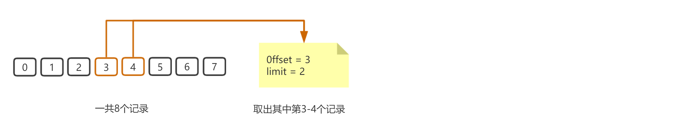

该接口用于获取指定的日历下的日程列表。
仅可获取应用自己创建的日历下的日程。
请求方式： POST（HTTPS）
请求地址： https://qyapi.weixin.qq.com/cgi-bin/oa/schedule/get_by_calendar?access_token=ACCESS_TOKEN
请求包体：
{ "cal_id": "wcjgewCwAAqeJcPI1d8Pwbjt7nttzAAA", "offset": 100, "limit": 1000 }点击复制
参数说明：
| 参数 | 是否必须 | 说明 |
|---|---|---|
| cal_id | 是 | 日历ID |
| offset | 否 | 分页，偏移量, 默认为0 |
| limit | 否 | 分页，预期请求的数据量，默认为500，取值范围 1 ~ 1000 |
当日程较多时，需要使用参数是offset及limit 分页获取，注意offset是以0为起点，这里以图例简单说明：
当获取到的 schedule_list 是空的时候，表示offset已经过大，此时应终止获取。若有新增日程，可在此基础上继续增量获取。
返回结果：
{ "errcode": 0, "errmsg": "ok", "schedule_list": [{ "schedule_id": "17c7d2bd9f20d652840f72f59e796AAA", "sequence": 100, "admins": [ "admin1", "admin2" ], "attendees": [{ "userid": "userid1", "response_status": 0 }], "summary": "test_summary", "description": "test_content", "reminders": { "is_remind": 1, "is_repeat": 1, "remind_before_event_secs": 3600, "repeat_type": 7, "repeat_until": 1606976813, "is_custom_repeat": 1, "repeat_interval": 1, "repeat_day_of_week": [3, 7], "repeat_day_of_month": [10, 21], "timezone": 8 }, "location": "test_place", "start_time": 1571274600, "end_time": 1571320210, "status": 1, "cal_id": "wcjgewCwAAqeJcPI1d8Pwbjt7nttzAAA" }] }点击复制
参数说明：
| 参数 | 类型 | 说明 |
|---|---|---|
| errcode | int32 | 返回码 |
| errmsg | string | 错误码描述 |
| schedule_list | obj[] | 日程列表 |
| schedule_list.schedule_id | string | 日程ID |
| schedule_list.admins | string | 管理员userid列表 |
| schedule_list.attendees | obj[] | 日程参与者列表。最多支持300人 |
| schedule_list.attendees.userid | string | 日程参与者ID |
| schedule_list.attendees.response_status | uint32 | 日程参与者的接受状态。 0 - 未处理 1 - 待定 2 - 全部接受 3 - 仅接受一次 4 - 拒绝 |
| schedule_list.summary | string | 日程标题 |
| schedule_list.description | string | 日程描述 |
| schedule_list.reminders | obj | 提醒相关信息 |
| schedule_list.reminders.is_remind | int32 | 是否需要提醒。0-否；1-是 |
| schedule_list.reminders.is_repeat | int32 | 是否重复日程。0-否；1-是 |
| schedule_list.reminders.remind_before_event_secs | uint32 | 日程开始（start_time）前多少秒提醒，当is_remind为1时有效。例如： 300表示日程开始前5分钟提醒。目前仅支持以下数值： 0 - 事件开始时 300 - 事件开始前5分钟 900 - 事件开始前15分钟 3600 - 事件开始前1小时 86400 - 事件开始前1天 |
| schedule_list.reminders.repeat_type | uint32 | 重复类型，当is_repeat为1时有效。目前支持如下类型： 0 - 每日 1 - 每周 2 - 每月 5 - 每年 7 - 工作日 |
| schedule_list.reminders.repeat_until | uint32 | 重复结束时刻，Unix时间戳。不填或填0表示一直重复 |
| schedule_list.reminders.is_custom_repeat | uint32 | 是否自定义重复。0-否；1-是 |
| schedule_list.reminders.repeat_interval | uint32 | 重复间隔 仅当指定为自定义重复时有效 该字段随repeat_type不同而含义不同 例如： repeat_interval指定为2，repeat_type指定为每周重复，那么每2周重复一次； repeat_interval指定为2，repeat_type指定为每月重复，那么每2月重复一次 |
| schedule_list.reminders.repeat_day_of_week | uint32[] | 每周周几重复 仅当指定为自定义重复且重复类型为每周时有效 取值范围：1 ~ 7，分别表示周一至周日 |
| schedule_list.reminders.repeat_day_of_month | uint32[] | 每月哪几天重复 仅当指定为自定义重复且重复类型为每月时有效 取值范围：1 ~ 31，分别表示1~31号 |
| schedule_list.reminders.timezone | uint32 | 时区。UTC偏移量表示(即偏离零时区的小时数)，东区为正数，西区为负数。 例如：+8 表示北京时间东八区 默认为北京时间东八区 取值范围：-12 ~ +12 |
| schedule_list.location | string | 日程地址 不多于128个字符 |
| schedule_list.status | uint32 | 日程状态。0-正常；1-已取消 |
| schedule_list.start_time | uint32 | 日程开始时间，Unix时间戳 |
| schedule_list.end_time | uint32 | 日程结束时间，Unix时间戳 |
| schedule_list.sequence | uint64 | 日程编号，是一个自增数字 |
| schedule_list.cal_id | string | 日程所属日历ID。不多于64字节 |
注意，被取消的日程也可以拉取详情，调用者需要检查status